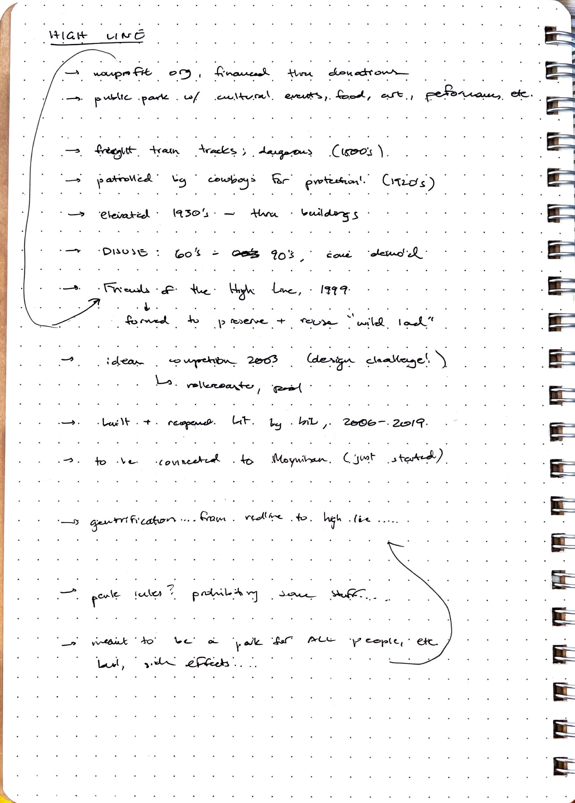

Contents
- Documentation
- Part 1: Ideating
- Part 2: Incorporating Feedback & Early Prototyping
- Part 3: Fabrication
- Part 4: Installation
- Part 5: Interactions
- Part 6: Moving Forward
- Blog Reflection
Documentation
Part 1: Ideating
We started the project by choosing a location. Since Yoshe lives in Jersey City, and I live in the UES, we ended up choosing the High Line as a good central point that we've both been to before. Before going to the High Line, we agreed to read the Whyte paper and do some research on the High Line.
On Thursday 9/8, we met up and visited the High Line, starting at the southernmost point and walking north. We saw some interesting things, including a scary water feature, signage directing people away from plants, and lots of large open spaces.

These open spaces were pretty empty, so we kept going. We eventually reached the 14th Street entrance, where we were drawn to the staircase leading up from the street. We thought this might be a good intervention point, since the placement of the stairs would allow for sneaky documenting from above.

We walked around the staircase and talked about some ideas, and then we kept going.
After the staircase, we walked to our main location, the split pathways with the water feature on one side. We actually first walked on the empty side and weren't all that impressed, but once we reached the north end of that stretch and heard the water feature, we were drawn to the east side.

We were both really interested in the water feature and decided to use this as the location instead. We spent about half an hour walking up and down that eastern side, people-watching, and dicussing possible ideas for our intervention.
We settled on the idea of having something swinging down and causing an obstruction, because it almost seemed like people were purposefully walking in the crowded areas and seeking out obstruction. We originally thought about hanging it from the trees above the path, but the branches seemed a bit too fragile and we weren't sure how to get up to them as they were quite high.
We also considered the scaffolding on the south end of this stretch. It was a bit more out of the way, but still close enough to the staircase and visible from the water feature walkway, so it seemed like a good compromise.
We met up again on Sunday 9/11 to refine our ideas and put together our presentation.


Back to Top
Part 2: Incorporating Feedback & Early Prototyping
After getting feedback in class on Monday 9/12, we realized that we would have to test different heights, sizes, and weights of the hanging object, in order to make sure it wasn't harmful to passersby. We decided to test differently sized stuffed animals at different heights as quick prototypes to find the best height.
On Wednesday 9/14, we met up before class at a fabric shop and got some red and blue-flowered fabric for the object and the rope. After the in-class activity, we performed some tests with two differently sized pet collars I had on hand.
From the smaller collar, we decided to put the object at head-height, since that would be the most visible and still was navigable. We also tested the pulling motion and were happy with how it turned out. We were a bit nervous about the size being too small, so we also prototyped with the bigger donut.
We decided to use the larger size as it would stand out more, and it was still small enough to be easily moved around and not cause any damage. We also decided keep thhe donut shape instead of a circular shape, so that it would offer a natural handle.
Finally, we tested out the braiding of the rope using one strip of red felt and two strips of blue fabric. We talked about sewing the blue strips in half to hide the white side of the fabric, but it actually worked out well enough by just folding it in half and braiding it.
The braided rope was super strong and could be easily adjusted for length, so we were happy with it.
Back to Top
Part 3: Fabrication
On Thursday 9/15, we started making the 'final' objects. We sewed three more strips onto each of the braid lengths, using diagonal connections for more strength.

Then, for the donuts, we used the red felt to cut out four donut shapes, and sewed them along the outside edge using the D12 Prototyping Lab sewing machine.

Since the donut shape has a hole in it, you can't sew all the edges and then turn it inside out like a normal plushie, so we turned them inside out just with the outside edges sewn closed. We then stuffed the donuts with scraps of the red felt and blue fabric, and then handsewed the inside edges closed.

The donuts came out a little smaller than anticipated, so we felt that sewing hand cutouts onto them wouldn't be very visible. Instead, we decided to add handle/grip areas out of blue fabric, kind of like for gymnastics rings.
Finally, Yoshe printed some tests of posters with different colored backgrounds. We ended up using one with a lighter green background and some darker coloring around the objects to make them stand out.

Here's a video of the fabrication process:
Back to Top
Part 4: Installation
We met up on Sunday 9/18 to do the actual installation around 1:30 pm. We had to pivot to a slightly different location on the scaffolding since the rope wasn't long enough for the original area we wanted. Luckily, there was some crossbracing nearby that allowed me to climb up and thread the rope through very easily.

We put up two posters, one on each side.

We only left it up for around 10 minutes or so, since a person wearing a High Line Staff shirt came by and seemed to be calling a manager about it. I took a sneaky walk by and he was calling it a "children's toy", which was kind of interesting. He eventually left, but we weren't sure if someone else was going to come by and take it down, so we decided to end the intervention.

Back to Top
Part 5: Interactions
We got a lot of really good interactions, as shown in the following gifs:


However, the main issue we ended up with was that many people were interacting with the physical object itself, but there weren't any direct stranger-to-stranger interactions. What we did get was the indirect interaction that occurred when one person pulled the ring down, creating a new obstacle for the next person to navigate around.
Another interesting phenomenon was how much children were fascinated by the objects, and how the High Line staff member described the rings as "children's toys". Because of how our design evolved throughout the fabrication process, the rings ended up being extremely child-friendly, so it was interesting to note how the material choice and visual design seemed to appeal a lot to children.
Back to Top
Part 6: Moving Forward
For future iterations, we initially came up with three changes:
The first change would be to make the rope longer. In our installation, it seemed like the rope being so short made it more likely that a single person or groups of people who already knew each other would interact with the objects. Therefore, we hoped that by increasing the length of the rope, it would encourage separate groups or separate people to interact with both ends of the rope at the same time.
The second change would be to add more ropes and donuts. Since we were constrained by where on the scaffold we could reach by climbing up the side, we had to install the rope closer to the side. This made it easier to walk around the rope or to ignore it entirely, so we hoped that by adding more series of ropes and donuts, the path would be more blocked off, forcing interaction, and there would also be many more contact points for multiple people to interact.
The last change was to make the posters larger, firmer, and propped up on an easel. The posters we printed were somewhat flimsy, and it was very windy that day, so they were constantly flopping around in the wind. We hoped that by making the posters bigger and putting them on an easel, more people would notice them, so they would understand the instructions better. We also hoped that by making the posters more structurally sound, they would seem more "official" and encourage people that they are "allowed" to interact.
After giving the presentation in class and hearing feedback, I also thought it would be a good idea to try the same installation in a children's playground or some other setting specifically geared towards children. From all the class presentations, it seemed that children were by far the most inclined to interact with everyone's installations; in our case, we also saw children being quite eager to try out the rings. It therefore seems likely that targeting child-to-child interactions specifically would have more success.
Back to Top
Blog Reflection
What was an unexpected discovery or insight you gained in this project?
I will admit that I was apprehensive to start off major studio with a two-person group project, since I almost always work alone and have had bad group experiences in the past (who hasn’t!). However, it quickly became clear to me that grad school is pretty different from undergrad in that everyone chooses to be here for a strong reason, and everyone is committed to doing their best to gain something out of it. As obvious as this sounds, I guess I was still operating in undergrad mode of assuming people would try to get out of group work and not want to contribute, so I’m glad to be pulled out of that mindset! It was surprisingly fun to work with another person on this project, and it certainly made it easier to have two pairs of hands and two brains. Going forward I am definitely more open to group work and more optimistic about the process.
What did you find particularly challenging, frustrating or exciting?
I did find it challenging to work around both of our schedules, particularly in the first few weeks of school where everyone was doing Making Center orientations and trying to figure out a rhythm at the same time. I think we were pretty proactive about making plans early, but I wasn’t expecting to spend so much weekend time on-campus or on-site. Again, just because it was in the first few weeks, everything felt more chaotic and busy than usual. (It was also unfortunate that I got COVID near the tail end, otherwise we might have tried another round at a different location…ah well!)
It was also kind of confusing to have us come up with a proposal first and then do an ideation exercise afterwards. I’m not sure if we would have changed our idea or not, but we had already bought materials for our first proposal before the ideation class, so we were kind of stuck to using that idea. I think it would have made more sense to present a location, history, and patterns, and then do the ideation exercise, and then choose a proposal. That way the ideation exercise would have been more helpful, at least for our group.
Conversely, I did find the ideation exercise to be unexpectedly a lot of fun. I wrote about this in a “Play Journal” for my Game Design elective, about how gamifying the ideation process made us come up with sillier and more out-there ideas. The time limit was helpful for just saying the first thing that came to mind, and we came up with a lot of interesting solutions that - even though they were silly - would have been really interesting to actually implement. I also found that it was a really good bonding exercise, which ties into what we talked about in Creative Practice about how playing little games before group work can make the group much more productive and focused. Again, I wish we could have done the ideation exercise earlier in the process, both to jump-start our ideation and also as a bonding exercise.
If you were to repeat this project with another week of time, what would you do differently?
If we had another week to repeat the project, I think I would try to keep a more open mind on the concept. We were pretty set in our idea from the get-go, and luckily I think it worked pretty well. Having an early idea also let us put more time into the fabrication which definitely paid off. However, as I said I really liked some of the wildly different concepts we had come up with in the ideation exercise and I might try incorporating some of those in a new cycle. I definitely think that knowing about the ideation exercise and the requirement for multiple prototypes would have played into how we structured our time, and in a second round I would try to allot more time to prototyping and incorporating ideas.
What strengths or missteps did you show as part of a collaborative team?
I think I was very proactive in our group with trying to schedule meetings for work time. I like to have a clear idea of how a project will progress in time, so I brought that planning mindset in as well. I think I might have been too assertive with my own ideas, because I was worried about the amount of time we had. I think I should definitely work on asking other group members for their ideas and taking a backseat when I feel I’ve been contributing for a while.
In conclusion...
Overall, this was a really interesting assignment to begin with! I really like the concept of trying to communicate without words in a public intervention. It brings up some interesting questions of what counts as interaction, how symbols or objects are read in particular spaces, and how public spaces are navigated and interpreted by different people. I also appreciated how the project made me return to thinking about pace and flow in an architectural sense, how the physical constraints of a space lead to different behaviors - I am definitely more of a tactile and spatial thinker, which I think came out in our approach to the project. It was really interesting to see all the other projects and to see how other people thought about the prompt in different ways.
Back to Top